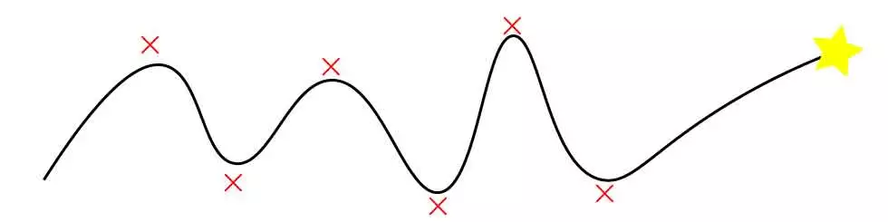

『株式会社アンチパターン』という社名に込めた想い
私たちのミッションは「日本のソフトウェアエンジニアを憧れの職業へ」することです。 このミッションに立ち向かうため、社名に込めた想いを伝えるために筆を執りました。
立教大学卒業後、B2Bマーケティングの会社に新卒入社。未経験からエンジニアに転身しわずか1年で全社MVPを獲得。その後、25歳でマザーズ上場を経験。技術開発本部にてEM、CTO見習い、ユニット長を歴任。現在もソフトウェアエンジニアとして開発に関わりながら代表取締役を務める。
1.アンチパターンとは
「ソフトウェア開発におけるアンチパターン (英: anti-pattern) とは、 必ず否定的な結果に導く、しかも一般的に良く見られる開発方式を記述する文献形式」 Wikipedia - https://ja.wikipedia.org/wiki/%E3%82%A2%E3%83%B3%E3%83%81%E3%83%91%E3%82%BF%E3%83%BC%E3%83%B3
つまり、もの凄く雑に書いてしまえば、"失敗集"ということです。
しかし、これが私たちの社名です。
2.ソフトウェアを描くということ
私自身ソフトウェアを描いているので思うのですが、 ソフトウェアを描くこと、それは基本的には世の中にない新しいものを生んでいる活動だと思います。
ソフトウェアはその基盤となる技術や人々の生活様式の上で、変化し続けるものなのです。
そうなった時に、多くのソフトウェアエンジニアは挑戦を強いられることになります。 そして、誰もが体験のしていないこと/新しいことに挑戦する時、そこには必ず失敗が伴います。
3.失敗を正しく取り扱う
失敗それ自体には価値はないのですが、 失敗という体験には新たな挑戦を生むパワーが備わっていると私は考えています。
失敗は正しく取り扱うことが重要なのです。
そして失敗を重ねつつ、 同じ失敗は繰り返さないようにしながら私たちは前進していきます。
だからこそ、 失敗を正しく取り扱うものたちとして、 社名を「株式会社アンチパターン」にしました。
(もちろん、ソフトウェアエンジニアに刺さる言葉としてこの社名にした、という側面も強いです。)
私たちのミッションは「日本のソフトウェアエンジニアを憧れの職業へ」というものです。
これも大きな挑戦です。 この挑戦が多くの失敗の中で輝き続けられることを祈りながら邁進していきます。
 株式会社アンチパターンでは一緒に働く仲間を募集していますいいね！
もどる